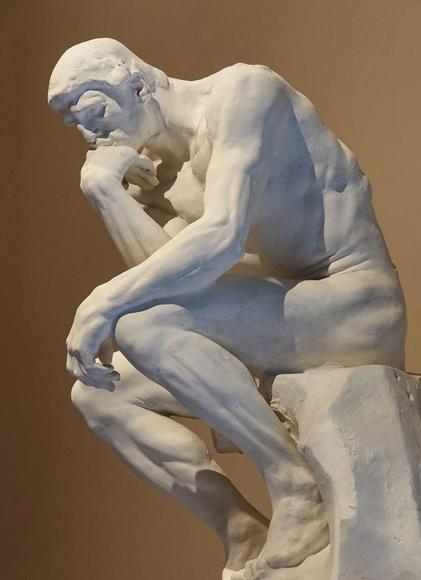
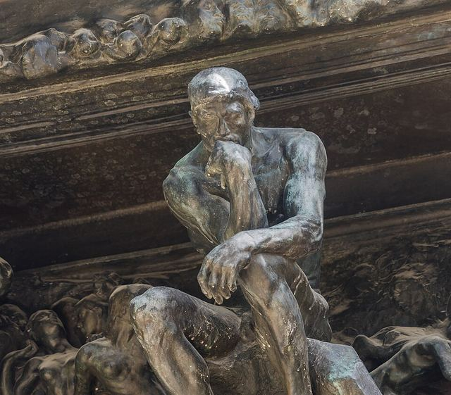

Feeling sure isn't knowing.


Every guess shows as white plaster blocks. Each point you earn is cast in bronze. Points that felt solid but failed show cracked.
Reality Check · branding round 4 · the meaning
A direction built from what the app does, not just how it looks. Rodin's Thinker is the hero, and his studio process is the system: a sculpture starts as soft clay held up by a frame, becomes a plaster that looks finished, and only counts when it's cast in bronze.
Our learners go through the same stages. Feeling sure is plaster. A proven answer is bronze. The calibration gap is the part that looked solid but didn't hold.
What every choice means
Feeling sure isn't knowing.

Every guess shows as white plaster blocks. Each point you earn is cast in bronze. Points that felt solid but failed show cracked.
Thinking is the muscle.
"he thinks not only with his brain … but with every muscle"
Rodin on his Thinker, 1917. Our decision log says the same thing: the subject is the gym equipment, and thinking is the muscle. So the Thinker is the hero image, straining, not posing.
Help that fades.
Our five levels (watch, guided, complete, named only, alone) become the five stages of a sculpture. Wet clay needs a frame inside it to stand. By bronze, nothing holds it up. That's our hint ladder.
You did this alone.

Patina is the green that bronze grows on its own, with time. So patina green marks every part done with no help, and level 5.
From the gate to the pedestal.

The Thinker started as part of a scene, guided by everything around him, and ended up standing alone. That's the path from level 1 to level 5, and the story the mastery screen tells.
Every check starts with a question.
The mark is a question mark whose dot has become a bronze check. It's the app in one shape: you start with a question, and end with something you've checked.
The screens
Build the map of a concept, answer real questions, and see how close your confidence was.
You'll build the map of democracy in 4 parts, 2 points each.
How many of the 8 points do you think you'll get?
For now your guess is plaster. At the end, every point you prove is cast in bronze.
A law?
Not quite. A law is a rule, and democracy isn't a rule.
Think of monarchy and dictatorship. What are all three examples of?
A hint caps this part at 1 point. The help fades as you level up.
Now you ask the questions. I'll answer with facts, never the map.
Is one product getting more expensive inflation?
Not by itself: that's one product. It counts as inflation when the overall price level goes up.
You found the bigger group and a real exclusion. 'What it needs' is next.
The Thinker began as one small figure in a huge gate and ended up on his own pedestal. Each part of a concept goes the same way.
From Bronze on, hints come only when you tap Help.
Type: Old Standard TT, a revival of the book types of Rodin's era, for display · Atkinson Hyperlegible Next, made by the Braille Institute so every letter is hard to confuse, for everything learners read.
WCAG 2 ratios for every color pair the screens use, computed in this page. Text needs 4.5:1, and graphics such as block outlines need 3:1.
| Pair | Ratio | Needs |
|---|